Encapsulation
Bundling data + methods together. Hide internal state using access modifiers (private/public/protected).
Inheritance
Child class acquires parent's properties. Promotes reuse. Establishes IS-A relationship.
Polymorphism
"Many forms." Same method name behaves differently. Compile-time (overloading) or runtime (overriding).
Abstraction
Hide implementation details. Show only what is necessary. Achieved via abstract classes and interfaces.
Inheritance: A SportsCar "is a" Car. It gets everything a Car has, plus extra features like turbo.
Polymorphism: Both Car and Truck have a
startEngine() method, but each starts differently. Abstraction: You know pressing the gas accelerates — you don't need to know HOW the engine burns fuel.
Encapsulation — Deep Explanation
myAccount.balance = 999999 — that's dangerous. Encapsulation prevents this by making balance private and only allowing changes through controlled methods like deposit() or withdraw().
// WITHOUT Encapsulation (BAD — dangerous!) class BankAccount { public double balance; // Anyone can change directly! } account.balance = -1000; // No validation → problem! // WITH Encapsulation (GOOD — safe!) class BankAccount { private double balance; // Hidden from outside public void deposit(double amount) { if (amount > 0) balance += amount; // Controlled access } public double getBalance() { return balance; } // Read-only }
Inheritance — Deep Explanation
class Animal { // Parent class String name; int age; void eat() { System.out.println(name + " is eating"); } void sleep(){ System.out.println(name + " is sleeping"); } } class Dog extends Animal { // Child class — gets ALL Animal properties void bark() { System.out.println(name + " says Woof!"); } } // Dog can use eat(), sleep(), AND bark() Dog d = new Dog(); d.name = "Rex"; d.eat(); // Inherited from Animal d.bark(); // Dog's own method
Inheritance in Depth
| Type | Definition | Example | Support |
|---|---|---|---|
| Single | One child, one parent | Dog → Animal | Java, C++ |
| Multilevel | Chain: A → B → C | Puppy → Dog → Animal | Java, C++ |
| Hierarchical | Multiple children, one parent | Cat, Dog → Animal | Java, C++ |
| Multiple | One child, multiple parents | FlyingFish → Fish, Bird | C++ only |
| Hybrid | Combination of above | Mix of multiple + hierarchical | C++ |
Abstraction — Deep Explanation
// Abstract class — defines WHAT, not HOW abstract class Shape { abstract double area(); // Must be implemented by children void describe() { // Concrete method (shared behavior) System.out.println("Area = " + area()); } } class Circle extends Shape { double radius; double area() { return Math.PI * radius * radius; } // HOW } class Rectangle extends Shape { double w, h; double area() { return w * h; } // Different HOW }
Encapsulation = data hiding (private fields + public getters). Inheritance = parent-child, IS-A relationship, code reuse. Polymorphism = same name, different behavior. Abstraction = hide complexity, show interface. Remember: "Every Important Programmer Abstracts"
Overriding = same method name, same parameters, DIFFERENT class (child overrides parent). Java figures out which one to call at run time (while running).
| Aspect | Method Overloading | Method Overriding |
|---|---|---|
| Occurs in | Same class | Parent-Child (Inheritance) |
| Resolved at | Compile time | Run time (vtable / virtual dispatch) |
| Signature | Different params | Identical signature |
| Return type | Can differ | Must be same (or covariant) |
| Keyword (Java) | None needed | @Override recommended |
// Compile-time: Overloading class Calculator { int add(int a, int b) { return a + b; } double add(double a, double b) { return a + b; } } // Runtime: Overriding class Animal { virtual void speak() { cout << "..."; } }; class Dog : public Animal { void speak() override { cout << "Woof!"; } }; Animal* a = new Dog(); a->speak(); // → "Woof!" (runtime dispatch)
Remember: Overloading = same name, different parameters (compile-time). Overriding = same name, same parameters, different class (runtime). Hiding applies only to static methods in Java subclasses.
A class is a blueprint/template. An object is an instance of a class with actual values in memory.
// Class = Blueprint class Student { private String name; // Field private int age; private double gpa; // Constructor — called when creating an object Student(String name, int age, double gpa) { this.name = name; this.age = age; this.gpa = gpa; } public String getName() { return name; } // Getter public void setGpa(double g) { gpa = g; } // Setter } // Objects = actual instances Student s1 = new Student("Ali", 20, 3.8); Student s2 = new Student("Zara", 21, 3.9); Student s3 = new Student("Ahmed", 19, 3.5);
Access Modifiers — Who can see what?
| Access Modifier | Same Class | Same Package | Subclass | Outside |
|---|---|---|---|---|
private | ✅ | ❌ | ❌ | ❌ |
default | ✅ | ✅ | ❌ | ❌ |
protected | ✅ | ✅ | ✅ | ❌ |
public | ✅ | ✅ | ✅ | ✅ |
this.name refers to the object's own field "name". Without this, inside the constructor the parameter name would shadow the field name — Java would think you're assigning name to itself! this removes the ambiguity.
Interface = a job contract/agreement. "You MUST implement these methods." No actual code provided — just a list of requirements. A class can sign multiple contracts (implement multiple interfaces).
| Feature | Abstract Class | Interface |
|---|---|---|
| Methods | Abstract + concrete (both allowed) | Abstract by default; default/static allowed in Java 8+ |
| Variables | Any type (instance, static, etc.) | public static final only (constants) |
| Multiple inherit | No (one parent class only) | Yes (class can implement many interfaces) |
| Constructor | Yes | No |
| Use when | Share partial code among related classes | Define a contract for possibly unrelated classes |
// Abstract class — partially implemented abstract class Vehicle { String brand; void refuel() { System.out.println("Refueling..."); } // concrete abstract void drive(); // abstract — must override! } // Interface — contract only interface Electric { void charge(); // must implement int batteryLevel(); } interface Autonomous { void selfDrive(); } // Class extends ONE abstract class, implements MULTIPLE interfaces class Tesla extends Vehicle implements Electric, Autonomous { void drive() { System.out.println("Tesla drives silently"); } void charge() { System.out.println("Charging at supercharger"); } int batteryLevel() { return 85; } void selfDrive() { System.out.println("Autopilot engaged"); } }
Interface = contract (WHAT to do). Abstract class = partial implementation (HOW to partially do it). Java uses interfaces to simulate multiple inheritance. Key difference: abstract class can have constructors and instance variables; interface cannot. When in doubt: if you want IS-A with shared code → abstract class. If you want "can-do" capabilities across unrelated classes → interface.
| Algorithm | Best | Average | Worst | Requires Sorted? |
|---|---|---|---|---|
| Linear Search | O(1) | O(n) | O(n) | No |
| Binary Search | O(1) | O(log n) | O(log n) | YES |
Binary Search: Open to the MIDDLE. Is "Zebra" before or after? It's after! Ignore the first half. Open to middle of the second half. Repeat. Find "Zebra" in ~10 steps instead of 500!
Binary Search — How it works
- Set low = 0, high = n-1
- Calculate mid = (low + high) / 2
- If
arr[mid] == target→ return mid (found) - If
arr[mid] < target→ set low = mid + 1 (search right half) - If
arr[mid] > target→ set high = mid - 1 (search left half) - Repeat until
low > high→ not found
mid = (low + high) / 2 can cause integer overflow when low and high are very large. Safer: mid = low + (high - low) / 2. Both give the same result but the second never overflows.
| Algorithm | Best | Average | Worst | Space | Stable? |
|---|---|---|---|---|---|
| Bubble Sort | O(n) | O(n²) | O(n²) | O(1) | ✅ |
| Selection Sort | O(n²) | O(n²) | O(n²) | O(1) | ❌ |
| Insertion Sort | O(n) | O(n²) | O(n²) | O(1) | ✅ |
| Merge Sort | O(n log n) | O(n log n) | O(n log n) | O(n) | ✅ |
| Quick Sort | O(n log n) | O(n log n) | O(n²) | O(log n) | ❌ |
| Heap Sort | O(n log n) | O(n log n) | O(n log n) | O(1) | ❌ |
Bubble Sort — Logic
Repeatedly compare adjacent elements and swap if out of order. After each full pass, the largest element "bubbles up" to its correct position.
// Optimized Bubble Sort (early exit) for (i = 0; i < n-1; i++) { swapped = false; for (j = 0; j < n-i-1; j++) if (arr[j] > arr[j+1]) { swap(); swapped = true; } if (!swapped) break; // already sorted → exit early → best case O(n) }
Merge Sort — Divide & Conquer
- Divide: Split array in half recursively until single elements
- Conquer: Each single element is trivially sorted
- Combine: Merge two sorted halves by comparing elements one by one
Quick Sort — Key Concepts
- Pivot selection is crucial. Bad pivots (always min/max) cause O(n²) worst case.
- Best pivot: random or median-of-three.
- In-place: O(log n) stack space only. Preferred when memory is limited.
- When does worst case O(n²) happen? When array is already sorted and you always pick first or last element as pivot. Then one partition is always empty.
Small data / nearly sorted → Insertion Sort. Large data, guaranteed performance → Merge Sort. Large data, average-case speed, in-place → Quick Sort. Priority queue operations → Heap Sort. Simple / educational → Bubble Sort (but slow in practice).
| Algorithm | Type | Data Structure | Use Case | Complexity |
|---|---|---|---|---|
| BFS | Uninformed | Queue | Shortest path (unweighted) | O(V+E) |
| DFS | Uninformed | Stack/Recursion | Connected components, cycles | O(V+E) |
| Dijkstra | Informed | Priority Queue | Shortest path (weighted, no neg) | O((V+E) log V) |
| A* | Heuristic | Priority Queue | Goal-directed pathfinding | Depends on h |
| Topological Sort | DAG only | Stack + DFS | Task scheduling, dependency order | O(V+E) |
A* vs BFS — Why Heuristic Wins
- g(n) = actual cost from start to node n
- h(n) = estimated cost from n to goal (heuristic)
- Admissible heuristic: h(n) never overestimates → A* is optimal
- BFS explores all nodes at distance d before distance d+1 — wasteful in large spaces
- A* explores nodes closest to the goal first → fewer nodes expanded
Diagram-Based Exam Practice
Selection sort versus insertion sort side by side trace
Merge sort trace on array [38,27,43,3,9,82,10]
Quick sort partitioning trace
Heap sort complete trace including build heap and extract max phases
O(log n) = Binary search on map. Halve the search area each time. Very fast even for huge maps.
O(n) = Drive at constant speed. 2x farther = 2x longer.
O(n²) = For every mile, check every other mile. Gets terrible fast.
O(2ⁿ) = Every step doubles your work. Absolute disaster for large inputs.
Concrete Numbers — Why It Matters
| Algorithm | n = 10 | n = 100 | n = 1,000 | n = 1,000,000 |
|---|---|---|---|---|
| O(1) | 1 | 1 | 1 | 1 |
| O(log n) | ~3 | ~7 | ~10 | ~20 |
| O(n) | 10 | 100 | 1,000 | 1,000,000 |
| O(n log n) | ~33 | ~700 | ~10,000 | ~20,000,000 |
| O(n²) | 100 | 10,000 | 1,000,000 | 10¹² |
| O(2ⁿ) | 1,024 | 10³⁰ | Impossible | Impossible |
For nested loops: multiply complexities. for(i) for(j) = O(n²). Single loop = O(n). Halving each iteration = O(log n). Count the dominant term only, drop constants. O(3n² + 5n + 7) = O(n²). The biggest term dominates as n → ∞.
Queue = line at a ticket counter. You join at the BACK, you leave from the FRONT. The FIRST person who joined is FIRST served (FIFO).
| Operation | Stack | Queue |
|---|---|---|
| Insert | push(x) — O(1) | enqueue(x) — O(1) |
| Remove | pop() — O(1) | dequeue() — O(1) |
| Peek | top() — O(1) | front() — O(1) |
Stack — Concrete Example: Balanced Parentheses
Real-World Applications
Stack Uses
Function call stack (recursion), undo/redo in editors (Ctrl+Z), balanced parentheses checking, DFS traversal, expression evaluation (postfix/prefix), browser back button
Queue Uses
CPU scheduling (Round Robin), BFS traversal, print spooling (printer queue), keyboard buffer, network packet management, customer service systems
Queue using Two Stacks — Clever Trick
Stack S1 (input) + Stack S2 (output). Enqueue to S1. To dequeue: if S2 empty, pour all S1 → S2 (reversal), then pop from S2.
Picture Practice — Core Operations
Stack push and pop trace diagram
Queue implemented using two stacks
Linked list insert and delete operations
| Traversal | Order | Use Case |
|---|---|---|
| In-order (LNR) | Left → Root → Right | BST gives sorted output |
| Pre-order (NLR) | Root → Left → Right | Copy a tree, prefix expression |
| Post-order (LRN) | Left → Right → Root | Delete a tree, postfix expression |
| Level-order | Level by level (BFS) | Shortest path in unweighted tree |
Max Heap
- Property: Every parent ≥ both children. Root is always the maximum.
- Insert: Add at end (maintain complete BT), then bubble up (heapify up).
- Delete Max: Swap root with last element, remove last, then heapify down (sift down).
- Build Heap: Start from last non-leaf (n/2 - 1), heapify down each. O(n) time.
- Applications: Priority Queue, Heap Sort, finding k largest elements.
For node at index i: Left child = 2i+1, Right child = 2i+2, Parent = (i-1)/2. This is how heaps are stored in arrays without pointers.
Picture Practice — Trees and Heap
Binary Search Tree with three traversals
Max-heap construction from array
AVL tree LL rotation example
All four AVL tree rotation cases: LL, RR, LR, RL
A hash table maps keys to values using a hash function. Average-case O(1) lookup, insert, delete.
Collision Resolution Methods
Linear Probing
On collision at h(k), try h(k)+1, h(k)+2, … (mod size) until empty slot found. Simple but causes clustering.
Quadratic Probing
Try h(k)+1², h(k)+2², h(k)+3²... Reduces primary clustering.
Chaining
Each table slot holds a linked list. All keys hashing to same slot are stored in the list.
Double Hashing
On collision, use a second hash function to compute step size. Eliminates clustering.
Picture Practice — Hash Table
Hash table with chaining collision resolution
| Representation | Space | Edge Check | List All Edges | Best For |
|---|---|---|---|---|
| Adjacency Matrix | O(V²) | O(1) | O(V²) | Dense graphs |
| Adjacency List | O(V+E) | O(degree) | O(V+E) | Sparse graphs |
Adjacency List: BFS/DFS traversals, sparse graphs (E << V²), most real-world graphs (social networks, road maps).
Picture Practice — Graph Algorithms
BFS vs DFS traversal on undirected graph
Dijkstra's shortest path algorithm trace
Prim's minimum spanning tree algorithm trace
| Structure | Key operations | Typical complexity |
|---|---|---|
| Array | Insert, Delete, Update, Traverse | Insert/Delete O(n), Update O(1), Traverse O(n) |
| Singly Linked List | Insert, Delete, Update, Reverse, Traverse | Head insert/delete O(1), search/update O(n), reverse O(n) |
| Doubly Linked List | Insert/Delete at both sides, traverse both directions | O(1) near known node, traversal O(n) |
| Circular Linked List | Round-robin style traversal, cyclic insert/delete | Similar to linked list, useful for repeating cycles |
| Stack | Push, Pop, Peek | All O(1) |
| Queue | Enqueue, Dequeue, Front | All O(1) with linked list/circular array |
| Circular Queue | Enqueue/Dequeue with wrap-around indices | O(1), prevents wasted slots |
Stack and Queue using Linked List
// Stack using linked list push(x): new->next = top; top = new pop(): if top==NULL underflow; x=top->data; top=top->next // Queue using linked list (front, rear) enqueue(x): create node; if rear==NULL front=rear=node; else rear->next=node; rear=node dequeue(): if front==NULL underflow; x=front->data; front=front->next; if front==NULL rear=NULL
Linked List Patterns Asked in Exam
Tree and Heap Essentials
| Topic | Exam focus |
|---|---|
| Binary Tree representation using array | For node i: left=2i+1, right=2i+2, parent=(i-1)/2 |
| BST | Left < root < right; average search/insert/delete O(log n) |
| Traversals | In-order, Pre-order, Post-order, Level-order |
| Heap | Complete binary tree; max/min root property; priority queues |
| B-Tree / B+ Tree | Multi-way balanced trees for disks/databases; B+ stores records at leaves |
Expression Conversion
(A+B)*C (operators between operands). Postfix: AB+C* (operators after operands). Stack is used for infix-to-postfix conversion and postfix evaluation.
Matrix Multiplication Algorithm
// Multiply A[r1][c1] and B[c1][c2] for i = 0 to r1-1 for j = 0 to c2-1 C[i][j] = 0 for k = 0 to c1-1 C[i][j] += A[i][k] * B[k][j] Time: O(r1 * c1 * c2), classical square case O(n^3)
| Algorithm | Main use | Key condition / note | Complexity |
|---|---|---|---|
| Prim's | MST | Grow tree from a start node | O(E log V) with heap |
| Kruskal | MST | Sort edges + union-find, avoid cycles | O(E log E) |
| Dijkstra | Single-source shortest path | No negative edge weights | O((V+E) log V) |
| Bellman-Ford | Single-source shortest path | Supports negative edges, detects negative cycle | O(VE) |
| Floyd-Warshall | All-pairs shortest path | Dynamic programming on adjacency matrix | O(V^3) |
| DFS / BFS | Traversal, components, reachability | DFS uses stack/recursion, BFS uses queue | O(V+E) |
Sorting and Searching Revision Table
| Category | Algorithms | Typical complexity |
|---|---|---|
| Searching | Linear Search, Binary Search | O(n), O(log n) |
| Quadratic Sorts | Bubble, Selection, Insertion | O(n^2) |
| n log n Sorts | Merge, Quick(avg), Heap, Shell(avg practical) | about O(n log n) |
| Non-comparison sort | Radix Sort | O(d*(n+b)) |
Algorithm Design Paradigms
Greedy
Choose best local option each step. Example: Kruskal, Prim, Huffman coding.
Dynamic Programming
Overlapping subproblems + optimal substructure. Save results (memoization/tabulation).
Divide and Conquer
Split, solve recursively, combine. Example: merge sort, quicksort, matrix divide methods.
Recursion
Function calls itself until base case; without base case it leads to infinite recursion.
Complexity Theory Basics
| Class | Meaning |
|---|---|
| P | Problems solvable in polynomial time by deterministic algorithms. |
| NP | Solutions can be verified in polynomial time. |
| NP-hard | At least as hard as NP problems; may not be in NP. |
| NP-complete | In NP and NP-hard both. |
| Model | Approach | Advantage | Disadvantage | Best for |
|---|---|---|---|---|
| Waterfall | Sequential phases | Simple, well-documented | No going back, late testing | Fixed requirements |
| Agile | Iterative sprints | Flexible, continuous delivery | Scope creep, less documentation | Changing requirements |
| Spiral | Risk-driven cycles | Early risk mitigation | Complex, expensive | Large high-risk projects |
| V-Model | Test parallel to dev | Early test planning | Rigid, like waterfall | Safety-critical systems |
Function Point (FP) Calculation
- UFP = sum of (count × weight) for: External Inputs (3/4/6), External Outputs (4/5/7), External Inquiries (3/4/6), Internal Logical Files (7/10/15), External Interface Files (5/7/10)
- ΣFi = sum of 14 General System Characteristics (0–5 each). All average → each=3, ΣFi=42
- CAF with all average = 0.65 + 0.01 × 42 = 1.07
Git — Version Control
| Command | What it does | Location |
|---|---|---|
git add . | Stage changes for commit | Working → Staging Area |
git commit | Save snapshot locally | Staging → Local Repo |
git push | Upload to remote server | Local → Remote (GitHub) |
git pull | Download remote changes | Remote → Local |
git branch | Create parallel line of work | Local |
git merge | Combine branches | Local |
Software Engineering Deep Dive
| Topic | Simple meaning | Exam point |
|---|---|---|
| SDLC | Full life of software from idea to support. | Used to explain the whole software process. |
| Software Maintenance Life Cycle | How a finished product is changed after release. | Includes corrective, adaptive, perfective, and preventive maintenance. |
| Feasibility Study | Check whether the project is worth doing. | Usually technical, economic, operational, legal, and schedule feasibility. |
Waterfall
One phase finishes before the next starts. Best when requirements are fixed and clear.
Agile
Work in short iterations or sprints. Best when requirements may change often.
Prototype
Build a quick sample version first so users can see and comment early.
Scrum
A popular Agile method. Uses product backlog, sprint backlog, daily stand-up, sprint review, and retrospective.
Spiral
Risk-driven model. Each cycle checks risks, builds a version, and improves it.
PERT is used when time estimates are uncertain. It uses optimistic, pessimistic, and most likely times. Critical path is the longest path in a project network; it tells the minimum project duration. Any delay on the critical path delays the whole project.
| Diagram | What it shows | Simple use |
|---|---|---|
| Use Case | Actor and system interaction | Shows what users can do in the system |
| Class Diagram | Classes, attributes, methods, relationships | Shows static structure of the software |
| State Diagram | States and transitions of an object | Shows how an object changes over time |
MVC
Model stores data, View shows data, Controller handles input. Good for separating logic and UI.
Observer
When one object changes, all subscribed objects get updated automatically.
Singleton
Only one object should exist. Used for configuration, logger, or shared manager objects.
Strategy
Choose one algorithm from many at runtime. Example: different payment methods or sorting strategies.
DSS
Decision Support System helps managers make decisions using reports, models, and analysis.
MIS
Management Information System gives regular reports for planning and control.
Microservices
Break one app into small independent services. Easier to scale, deploy, and maintain separately.
Validation & Verification
Verification asks “Are we building the product right?” Validation asks “Are we building the right product?”
| Type | Meaning | Simple example |
|---|---|---|
| Unit Testing | Test one small function or class. | Check addTax() by itself. |
| Acceptance Testing | User checks if requirements are met. | Client confirms the login flow works. |
| Black Box | Test input/output without seeing code. | Enter data, compare output. |
| White Box | Test internal logic and paths. | Check if every branch executes correctly. |
| Gray Box | Mix of black box and white box. | Know some internal design, but not all code. |
| Regression | Re-test old features after a change. | Fix one bug, then check other features still work. |
| Alpha | Testing inside the company. | Internal team finds bugs before release. |
| Beta | Testing by real users outside the team. | Small user group tests the software. |
| Gamma | Very late stage testing before final release. | Final confirmation that the product is ready. |
Equivalence Partitioning
Split inputs into groups that behave the same. Test one value from each group.
Boundary Value Analysis
Test values at the edge of valid input ranges, because bugs often happen there.
Smoke Testing
Quick basic test to see whether the build is stable enough for deeper testing.
Functional Testing
Checks what the system does.
Non-functional Testing
Checks how well the system works: performance, usability, security, reliability.
DRE measures how well defects are removed before release. Formula idea: defects removed before release divided by total defects found before + after release. Higher DRE means better quality and fewer user-facing bugs.
| Topic | Simple meaning | Why it matters |
|---|---|---|
| Git | Version control for tracking code changes. | Lets teams collaborate and recover old versions. |
| Docker | Packages app + dependencies into a container. | Runs the same way on laptop, server, or cloud. |
| Socket | Endpoint for network communication between two machines or programs. | Used for chat, games, and real-time systems. |
| GET / POST | HTTP methods for sending requests. | GET reads data, POST sends data to create or submit something. |
| Microservices | Small services communicate over APIs. | Each service can scale or fail independently. |
Docker in one line
“Build once, run anywhere” by bundling code, runtime, libraries, and settings together.
Socket in one line
A socket is the communication bridge between a client and a server.
GET
Used to fetch data. Parameters are often visible in the URL.
POST
Used to submit data. Data goes in the request body, not the URL.
Layer 6 (Presentation): You translate it to English.
Layer 5 (Session): You start a conversation (phone call logistics).
Layer 4 (Transport): You decide how many pages to send per envelope.
Layer 3 (Network): You write the destination country and city.
Layer 2 (Data Link): Local post office puts it in their mail bag.
Layer 1 (Physical): The mail truck physically carries it.
| Layer | PDU | Key Devices | Key Protocols |
|---|---|---|---|
| Application (7) | Data | Servers, PCs | HTTP, FTP, SMTP, DNS |
| Transport (4) | Segment | Firewalls | TCP, UDP |
| Network (3) | Packet | Router | IP, OSPF, ICMP |
| Data Link (2) | Frame | Switch, Bridge | Ethernet, ARP |
| Physical (1) | Bit | Hub, Cable | Ethernet physical |
TCP vs UDP — Which one to use?
| Feature | TCP | UDP |
|---|---|---|
| Connection | Connection-oriented (handshake) | Connectionless (no handshake) |
| Reliability | Guaranteed delivery, in order | No guarantee (fire and forget) |
| Speed | Slower (overhead) | Faster (no overhead) |
| Error checking | Yes — retransmits lost packets | Minimal — application handles errors |
| Use case | Web browsing, file download, email | Video streaming, gaming, VoIP, DNS |
IP Address Classes
| Class | Range | Default Subnet | Use |
|---|---|---|---|
| A | 1.0.0.0 – 126.x.x.x | 255.0.0.0 /8 | Large enterprises |
| B | 128.0.0.0 – 191.255.x.x | 255.255.0.0 /16 | Medium organizations |
| C | 192.0.0.0 – 223.255.255.x | 255.255.255.0 /24 | Small networks |
| D | 224.0.0.0 – 239.x.x.x | — | Multicast |
OSPF — Open Shortest Path First
- Type: Link-State routing protocol (Layer 3)
- Algorithm: Dijkstra's SPF (Shortest Path First)
- Area concept: Area 0 = backbone. Other areas connect to Area 0.
- LSA: Link State Advertisements flood the area so every router has identical LSDB.
- Metric: Cost based on bandwidth (higher bandwidth = lower cost).
- Convergence: Much faster than RIP. No hop-count limit.
Shannon's Capacity Theorem
For telephone line: B = 3000 Hz, SNR = 3162 → C = 3000 × log₂(3163) = 3000 × 11.627 ≈ 34,881 bps
Checksum — Error Detection
- Sender divides data into fixed-size segments and adds all (binary addition with wraparound)
- Takes 1's complement of the sum = checksum
- Appends checksum to data and transmits
- Receiver sums all segments including checksum
- If result = all 1s → no error. Any 0 → error, request retransmission
Networking Deep Dive
| Term | Simple meaning | Exam hint |
|---|---|---|
| LAN | Local Area Network, small area like lab/building. | Fast, private, small range. |
| MAN | Metropolitan Area Network, city-wide network. | Bigger than LAN, smaller than WAN. |
| WAN | Wide Area Network, very large area like country or world. | The Internet is the biggest WAN example. |
| Backbone | Main high-speed network path connecting major parts. | Think of it as the main highway of the network. |
Router
Connects different networks and forwards packets using IP addresses.
Switch
Connects devices in a LAN and forwards frames using MAC addresses.
Hub
Sends data to every port. Old, simple, and inefficient.
Firewall
Filters traffic based on rules, ports, IPs, and application policies.
Gateway
Connects different protocols or networks. Often acts as the entrance to other networks.
| Term | Simple meaning | Key point |
|---|---|---|
| TCP | Reliable, connection-oriented transport. | Uses handshake, sequencing, acknowledgments, retransmission, congestion control. |
| UDP | Fast, connectionless transport. | No handshake, low overhead, good for streaming and games. |
| TCP/IP | The main protocol suite of the Internet. | Application, transport, internet, network access layers are often taught here. |
| HTTP/HTTPS | Web communication protocols. | HTTPS = HTTP plus encryption using TLS/SSL. |
| DHCP | Automatically gives IP, gateway, DNS, and lease information. | Server assigns address; client asks for one. |
| NAT | Maps private IPs to public IPs. | Many internal devices can share one public address. |
Connection-oriented
The connection is set up before data transfer. TCP is the classic example.
Connectionless
No setup first; packets are sent directly. UDP is the classic example.
3-Way Handshake
SYN → SYN-ACK → ACK. This starts a TCP session safely.
Congestion Control
TCP slows down when the network gets busy to avoid overload and packet loss.
| Protocol | Use | Simple role |
|---|---|---|
| DNS | Names to IP | Phonebook of the Internet |
| DNS Server | Answers name lookups | Returns the IP for a domain |
| DHCP Server | Leases IP settings | Automatically configures clients |
| ARP | IP to MAC | Finds the hardware address on a LAN |
| RARP | MAC to IP | Older reverse lookup method |
| SMTP | Send email | Mail transfer from client/server |
| FTP | File transfer | Uploads/downloads files |
| HTTP | Web pages | Browser and web server communication |
| Topic | Simple meaning | Exam point |
|---|---|---|
| Subnet Mask | Separates network part and host part of an IP. | Helps decide which devices are local. |
| VLSM | Different subnet sizes inside the same network. | Reduces address waste. |
| IPv4 | 32-bit address format. | Limited address space. |
| IPv6 | 128-bit address format. | Huge address space, modern Internet protocol. |
| Distance Vector | Routers share distance to destinations with neighbors. | Used by RIP; slower convergence than link-state. |
| RIP | Routing Information Protocol. | Uses hop count; simple but old. |
| OSPF | Open Shortest Path First. | Link-state, fast, uses Dijkstra. |
Gateway
Exit point from one network to another, usually toward the Internet.
Router
Forwards packets between networks.
Forwarding
Moving a packet to the next hop based on routing information.
Flooding
Sending packets to all possible paths. Simple but inefficient.
| Term | Simple meaning | Key note |
|---|---|---|
| Switch | Connects devices in a LAN and forwards frames to the correct port. | Uses MAC addresses. |
| Hub | Old device that sends data to all ports. | No intelligence, more collisions. |
| Ethernet | Common wired LAN technology. | Uses frames and MAC addressing. |
| Twisted pair cable | Two copper wires twisted together. | Cheap, common, can carry Ethernet. |
| Fiber cable slicing | Preparing and joining fiber-optic cable ends. | Used for high-speed backbone and long-distance links. |
| Wi-Fi | Wireless LAN technology. | Uses radio waves. |
| Bluetooth | Short-range wireless communication. | Good for peripherals and personal devices. |
| WiMAX | Longer-range wireless broadband. | Often compared with Wi-Fi and used for wider coverage. |
MAC Flood
Attack that overfills a switch MAC table so it starts behaving like a hub.
DHCP Starvation
Attack that requests many IPs to exhaust the DHCP pool.
DNS Poisoning
Attack that sends fake DNS answers and redirects users to wrong IPs.
Proxy Server
Intermediary between client and server for filtering, caching, and hiding clients.
| Attack / Risk | Simple meaning | Common defense |
|---|---|---|
| Threat | Anything that can cause harm. | Security controls |
| Vulnerability | A weakness that can be exploited. | Patch, harden, monitor |
| Risk | Chance of loss when threat meets vulnerability. | Reduce threat or weakness |
| WAF | Web Application Firewall protects web apps. | Blocks bad HTTP requests |
| NMS | Network Management System monitors and manages network devices. | Tracks health, alerts, and performance |
| Internet Cookies | Small data saved by websites in the browser. | Used for sessions, preferences, and tracking |
| Topic | Simple meaning | Where used |
|---|---|---|
| CSMA | Devices listen before sending on shared media. | Ethernet/wireless contention methods. |
| Circuit switching | Dedicated path set before communication. | Traditional telephone style networks. |
| Packet switching | Data split into packets and routed independently. | The Internet. |
| Cell switching | Fixed-size cells are switched. | ATM-style networks. |
| TDM | Time Division Multiplexing, share one channel by time slots. | Telecom and digital links. |
| FDM | Frequency Division Multiplexing, share by frequency bands. | Radio and cable systems. |
| Serial communication | Bits sent one after another on one line. | Simple devices, embedded systems. |
| I2C | Two-wire serial bus for chips and sensors. | Embedded hardware communication. |
| SPI | Fast serial bus for short-distance chip communication. | Microcontrollers, displays, memory chips. |
| Topic | Simple meaning | Exam point |
|---|---|---|
| SMTP | Used to send email. | Mail transfer protocol. |
| DNS | Converts names to IP addresses. | Like the Internet phonebook. |
| HTTP | Web protocol without encryption by default. | Used for web pages and APIs. |
| HTTPS | HTTP with encryption. | Protects data using TLS/SSL. |
| Cookies | Small browser data files. | Store session and user preferences. |
DNS Server
Resolves human-friendly domain names into IP addresses.
SMTP Server
Handles outgoing mail transfer.
HTTP vs HTTPS
HTTPS adds encryption, so it is safer for login and payments.
| Topic | Simple meaning | Exam formula / note |
|---|---|---|
| Data communication | Exchange of data between sender and receiver over a channel. | Sender, medium, receiver, protocol. |
| Communication channel | Path used to transmit signal. | Guided (wired) or unguided (wireless). |
| Guided media | Twisted pair, coax, optical fiber. | Physical path controls signal. |
| Unguided media | Radio, microwave, infrared. | Signal travels through air/space. |
| Simplex / Half Duplex / Full Duplex | One-way / two-way one-at-a-time / two-way simultaneous. | Examples: keyboard, walkie-talkie, phone call. |
| CDMA | Users share same band with unique codes. | Code separation enables multiple access. |
Sampling, ADC and Quantization
- ADC steps: sampling, quantization, encoding.
- Quantization error: difference between actual analog value and nearest quantized level.
- AWGN: Additive White Gaussian Noise, a random noise model with Gaussian amplitude and flat spectral density.
- PCM: Pulse Code Modulation converts sampled and quantized values to binary code.
- Delta Modulation: transmits only the change (+/- step). Simpler than PCM but may have slope overload/granular noise.
Modulation and Demodulation Numericals
| Parameter | Formula | Note |
|---|---|---|
| AM modulation index | m = (Amax - Amin)/(Amax + Amin) | 0 to 1 for under-modulation. |
| Total AM power | Pt = Pc(1 + m^2/2) | Pc = carrier power. |
| Carrier frequency | fc = 1/Tc | Tc is carrier period. |
| SNR (ratio) | SNR = Ps/Pn | In dB: 10log10(Ps/Pn). |
| Bit rate | Rb = bits per symbol x baud rate | bps unit. |
| Baud rate | Symbols per second | Not always equal to bit rate. |
| Bit Error Rate | BER = error bits / total transmitted bits | Lower BER means better link quality. |
Optical Fiber and Transport Terms
| Term | Meaning | Exam point |
|---|---|---|
| Working principle of optical fiber | Light guided through core using total internal reflection. | Core refractive index > cladding index. |
| Single-mode fiber | One propagation mode, long distance, high bandwidth. | Small core diameter. |
| Multi-mode fiber | Multiple light paths, shorter distance. | Larger core, modal dispersion. |
| Numerical aperture | Light gathering ability of fiber. | NA = sqrt(n1^2 - n2^2). |
| STS / STM | Synchronous optical hierarchy transport frames. | STS in SONET, STM in SDH. |
Thread = a mini-task inside a process. Chrome uses multiple threads: one thread loads the webpage, another plays a video, another handles your typing — all at the SAME TIME, sharing Chrome's memory.
Thread = a worker inside the factory. Multiple workers share the same factory's resources (machines, inventory) but each does their own task simultaneously.
| Aspect | Process | Thread |
|---|---|---|
| Memory | Own address space | Shared with process |
| Creation | Expensive (fork) | Cheap (within process) |
| Context switch | Slow (full save/restore) | Fast (partial) |
| Communication | IPC (pipes, sockets) | Direct (shared memory) |
| Isolation | Strong (crash contained) | Weak (one crash may kill all) |
What is a PCB? (Process Control Block)
Why Use Multithreading?
Performance
Parallel execution on multicore CPUs — tasks done simultaneously. A 4-core CPU can truly run 4 threads at the same time.
Responsiveness
UI thread stays active while background thread downloads/computes. Without threads, your app would freeze while downloading a file.
Resource Sharing
Threads share memory automatically — no expensive IPC (pipes, sockets) needed to pass data between them.
Economy
Creating/destroying threads is much cheaper than processes. Thread creation: microseconds. Process creation: milliseconds.
Producer-Consumer Problem
A bounded buffer shared between producers (add items) and consumers (remove items). Three issues: (1) race condition, (2) producer blocking when full, (3) consumer blocking when empty.
Solution uses 3 semaphores: mutex=1 (mutual exclusion — only one thread accesses buffer at a time), empty=N (counts free slots — producer waits if 0), full=0 (counts filled slots — consumer waits if 0)
Deadlock — 4 Necessary Conditions (Coffman)
Solution: Make one car back up (preemption) OR make all cars agree on an order of crossing (prevent circular wait).
Mutual Exclusion
Resource held by only one process at a time. Example: Only one process can write to a file at once (can't be shared simultaneously).
Hold & Wait
Process holds at least one resource while waiting for more. Process P1 holds printer, waiting for scanner.
No Preemption
Resources cannot be forcibly taken away — only released voluntarily by the holding process.
Circular Wait
P1 waits for P2, P2 waits for P3, P3 waits for P1 — a cycle of waiting that never ends.
Page Replacement Algorithms
| Algorithm | Policy | Optimal? | Practical? |
|---|---|---|---|
| FIFO | Replace oldest loaded page | No (Belady's anomaly) | Simple |
| LRU | Replace least recently used | Close to optimal | Yes (stack) |
| Optimal (OPT) | Replace page used farthest in future | Yes (theoretical) | No (needs future knowledge) |
| Clock (NRU) | Approximate LRU using reference bit | No | Yes (used in Linux) |
Virtual Memory vs Cache Memory
| Virtual Memory | Cache Memory | |
|---|---|---|
| Location | Disk (extends RAM) | Between CPU and RAM (SRAM) |
| Speed | Slower (disk access) | Extremely fast (CPU speed) |
| Managed by | OS + MMU | Hardware (CPU) |
| Purpose | Run programs larger than RAM | Reduce average memory access time |
| Exploits | Locality of reference (temporal + spatial) | Same |
The kernel is the core of the OS running in privileged mode with full hardware access.
Process Management
Create, schedule, terminate processes. Context switching between them.
Memory Management
Allocate/free RAM, virtual memory, paging, segmentation.
Device Management
I/O device drivers, interrupt handling, device communication.
File System
Create/read/write/delete files, directory management, permissions.
Security
User authentication, access control, system call validation.
IPC
Pipes, signals, message queues, shared memory, semaphores.
Kernel Types & Shell
| Type | Meaning | Exam point |
|---|---|---|
| Monolithic Kernel (Macro Kernel) | Most services run in kernel space. | Fast but larger trusted code base. |
| Microkernel | Only minimal core in kernel space; services in user space. | More modular and secure, slightly higher IPC overhead. |
| Shell | User-facing command interpreter. | Shell takes command and asks kernel to execute it. |
| Kernel | Core manager of hardware/resources. | Shell vs kernel is a very common viva question. |
| Term | Simple meaning | Exam point |
|---|---|---|
| Multitasking | One CPU appears to run many tasks by switching quickly. | Time slicing gives this illusion. |
| Multiprogramming | Keep multiple programs in memory to maximize CPU use. | If one waits for I/O, CPU runs another. |
| Multiprocessing | System has multiple CPUs/cores for real parallel execution. | Higher throughput and reliability. |
| Multithreading | Multiple threads inside one process. | Shared memory, cheaper than process creation. |
| Open Source OS | Source code is publicly available. | Linux is a common example. |
| 32-bit vs 64-bit | CPU register/address width. | 64-bit supports much larger address space. |
Process State Model
fork() creates a child process. Parent and child run concurrently and have separate process IDs, but initially similar memory content.
Linux Commands, Shell Script & Mount Point
# common commands pwd ls -la cd /home/user mkdir demo cp a.txt b.txt mv b.txt notes.txt rm notes.txt ps -ef top # mount point example mount /dev/sdb1 /mnt/data # tiny shell script #!/bin/bash echo "Hello OS" date
/mnt/data). Without mounting, the OS cannot access that device's files through the normal directory tree.
| Algorithm | Type | Main idea | Weakness |
|---|---|---|---|
| FCFS | Non-preemptive | First come, first served. | Convoy effect. |
| SJF | Non-preemptive | Shortest job first. | Needs burst prediction. |
| SRTF | Preemptive | Shortest remaining time first. | Can starve long jobs. |
| Round Robin | Preemptive | Fixed time quantum rotation. | Too small quantum = overhead. |
| Priority | Both | Higher priority first. | Low priority starvation (fix with aging). |
Quick Solved Scheduling Pattern
| Concept | Simple meaning | Exam note |
|---|---|---|
| Paging | Split memory into fixed-size pages/frames. | Avoids external fragmentation. |
| Segmentation | Split memory by logical units (code/data/stack). | Variable-sized segments, user-visible. |
| Demand Paging | Load pages only when needed. | First reference may cause page fault. |
| Page Fault | Required page not in RAM. | OS brings page from disk. |
| Thrashing | System spends too much time swapping pages. | Very high page fault rate, poor CPU usage. |
| Small page size | More page table entries, less internal fragmentation. | Trade-off question is common in viva. |
Page Replacement Coverage
Address Translation Math (Solved)
Frames = Physical Memory / Page Size. Pages = Logical Memory / Page Size. Offset bits = log2(Page Size in bytes). Logical address = page# + offset. Physical address = frame# + offset.
| Key Type | Definition | Example |
|---|---|---|
| Primary Key | Uniquely identifies each row. NOT NULL. No duplicates ever. | student_id in Students |
| Foreign Key | References PK in another table. Enforces referential integrity — you can't add a student to a non-existent department. | dept_id in Students references Departments |
| Candidate Key | Minimal set of attributes that uniquely identifies a row — any of these could be the PK. | email OR student_id (both are unique) |
| Composite Key | PK made of 2+ attributes together — neither alone is unique, but combined they are. | (student_id, course_id) in Enrollment |
| Super Key | Any set of attributes that can uniquely identify a row — may contain extra attributes beyond needed. | {student_id, name} — student_id alone is enough, but this combo is also unique |
Relationship Types
One-to-One (1:1)
Person ↔ Passport. Each person has one passport, each passport belongs to one person. Stored via FK in either table.
One-to-Many (1:N)
Department → Employees. One department has many employees, but each employee belongs to one department. FK goes in the "many" table (dept_id in Employees).
Many-to-Many (M:N)
Students ↔ Courses. A student takes many courses; a course has many students. Needs a junction/bridge table (Enrollment) with both FKs as composite PK.
SQL Essentials — With Explanations
-- CREATE TABLE CREATE TABLE Employee ( emp_id INT PRIMARY KEY, -- unique, not null name VARCHAR(100) NOT NULL, -- can't be empty salary DECIMAL(10,2), -- 10 digits, 2 decimals dept_id INT REFERENCES Department(dept_id) -- FK constraint ); -- SELECT with JOIN — combine two related tables SELECT e.name, d.dept_name, e.salary FROM Employee e JOIN Department d ON e.dept_id = d.dept_id -- INNER JOIN: only matching rows WHERE e.salary > 50000 ORDER BY e.salary DESC; -- Aggregate functions + GROUP BY SELECT dept_id, COUNT(*), AVG(salary), MAX(salary) FROM Employee GROUP BY dept_id -- group rows by department HAVING AVG(salary) > 40000; -- filter GROUPS (not rows — that's WHERE)
ACID Properties
Atomicity
All operations succeed OR all are rolled back. "All or nothing." If step 1 succeeds but step 2 fails, step 1 is reversed automatically. Money never disappears.
Consistency
Transaction takes DB from one valid state to another. Rules/constraints always hold. Total money before = total money after the transfer.
Isolation
Concurrent transactions behave as if sequential. If two people transfer money simultaneously, each sees the DB as if they're the only one acting. No "dirty reads."
Durability
Committed transactions survive crashes. Once the bank confirms your transfer, even a power cut won't reverse it. Data is on disk (non-volatile).
Normalization — Explained with Examples
| Form | Rule | Eliminates | Simple Example |
|---|---|---|---|
| 1NF | Atomic values, no repeating groups | Multi-valued attributes | No "Math, Science" in one cell — use separate rows |
| 2NF | 1NF + no partial dependency on composite PK | Partial dependencies | If PK=(StudentID, CourseID), CourseName depends only on CourseID → move it out |
| 3NF | 2NF + no transitive dependency (non-key → non-key) | Transitive dependencies | ZipCode → City — ZipCode is not a key but determines City → separate table |
| BCNF | Every determinant is a candidate key | Remaining anomalies | Stronger version of 3NF — every left-hand side of a functional dependency is a superkey |
| Topic | Simple meaning | Exam note |
|---|---|---|
| Distributed DBMS | One logical DB spread across multiple physical sites. | Goals: availability, locality, scalability, transparency. |
| Relational database | Data stored in relation (table) form. | Rows = tuples, columns = attributes, degree = number of attributes. |
| Degree of relationship | Number of participating entities in relationship. | Unary, binary, ternary; cardinality: 1:1, 1:N, M:N. |
| Functional Dependency | X -> Y means X determines Y. | Used in normalization and key finding. |
| Confidentiality & Integrity (DB security) | Confidentiality = authorized access only; Integrity = correct and unmodified data. | Use access control, constraints, logs, backup, hashing. |
ER Diagram Symbols and Drawing Notes
Key Types Quick Revision
| Key | Meaning |
|---|---|
| Primary key | Main unique identifier, not null. |
| Candidate key | Minimal unique attribute set. |
| Alternate key | Candidate keys not selected as primary key. |
| Super key | Any attribute set that uniquely identifies rows. |
| Foreign key | References key from another table. |
| Composite key | Key formed by multiple attributes. |
Indexing, B-tree, B+ tree and Hashing
| Structure | Use | Exam line |
|---|---|---|
| Indexing | Speeds up lookup by auxiliary structure. | Trade-off: extra storage and update cost. |
| B-tree | Balanced multi-way search tree. | Keys and records can be in internal and leaf nodes. |
| B+ tree | DB index tree optimized for range queries. | All records at leaves; leaves linked sequentially. |
| Hashing (static/dynamic) | Fast equality search by hash function. | Very fast for = queries, weak for range queries. |
SQL Command Groups
| Group | Commands | Meaning |
|---|---|---|
| DDL | CREATE, ALTER, DROP, TRUNCATE | Defines or changes schema objects. |
| DML | INSERT, UPDATE, DELETE | Modifies table data. |
| DQL | SELECT | Reads/query data. |
| DCL | GRANT, REVOKE | Privileges and permissions. |
| TCL | COMMIT, ROLLBACK, SAVEPOINT | Transaction control. |
-- Basic to advanced SQL flow CREATE TABLE Student(id INT PRIMARY KEY, name VARCHAR(80), dept VARCHAR(40), cgpa DECIMAL(3,2)); INSERT INTO Student VALUES (1,'Ari','CSE',3.75); UPDATE Student SET cgpa = 3.85 WHERE id = 1; DELETE FROM Student WHERE id = 1; SELECT s.name, d.dept_name FROM Student s JOIN Department d ON s.dept = d.code; -- View CREATE VIEW cse_students AS SELECT id, name, cgpa FROM Student WHERE dept = 'CSE'; -- Procedure (dialect-dependent syntax) CREATE PROCEDURE promote_cgpa(IN sid INT) BEGIN UPDATE Student SET cgpa = cgpa + 0.10 WHERE id = sid; END; -- Function (dialect-dependent syntax) CREATE FUNCTION grade_point(x DECIMAL(3,2)) RETURNS VARCHAR(2) BEGIN RETURN CASE WHEN x >= 3.7 THEN 'A' ELSE 'B' END; END;
Trigger and Transaction
-- Trigger: log salary update CREATE TRIGGER trg_salary_update AFTER UPDATE ON Employee FOR EACH ROW BEGIN INSERT INTO AuditLog(emp_id, old_sal, new_sal) VALUES(OLD.emp_id, OLD.salary, NEW.salary); END; -- Transaction START TRANSACTION; UPDATE Account SET balance = balance - 500 WHERE id = 1; UPDATE Account SET balance = balance + 500 WHERE id = 2; COMMIT;
TRUNCATE vs DELETE
| Command | Effect | Speed | WHERE allowed? |
|---|---|---|---|
| DELETE | Removes selected rows | Slower | Yes |
| TRUNCATE | Removes all rows, keeps table structure | Faster | No |
Relational Algebra Basics
| Operator | Symbol | Meaning |
|---|---|---|
| Select | sigma | Row filtering by condition |
| Project | pi | Column selection |
| Union | union | Combine tuples from compatible relations |
| Difference | minus | Tuples in R not in S |
| Cartesian product | times | All pair combinations |
| Join | bowtie | Combine related tuples on condition |
Confidentiality
Only authorized parties can access data. Techniques: Encryption (AES, RSA), access control (passwords, roles), authentication (2FA, certificates). Example: Your bank password is encrypted so even if hackers steal the database, they can't read it.
Integrity
Data is accurate and unaltered in transit or storage. Techniques: Hash functions (SHA-256), digital signatures, checksums, MAC. Example: When you download software, the SHA hash confirms the file wasn't tampered with.
Availability
Systems are accessible when needed. Techniques: Redundancy (backup servers), load balancing, DDoS protection, UPS. Example: Hospital systems must ALWAYS be available — a cyberattack that shuts them down could cost lives.
| Attack | CIA Violated | Description | Defense |
|---|---|---|---|
| Interception (Eavesdropping) | Confidentiality | Hacker listens to network traffic (man-in-the-middle) and reads your messages | Encryption (TLS/HTTPS) |
| Falsification (Tampering) | Integrity | Attacker modifies data in transit — changes your bank transfer amount from ৳100 to ৳10,000 | Digital signatures, MACs |
| Masquerade (Spoofing) | Confidentiality + Integrity | Attacker pretends to be your bank website (phishing) to steal your credentials | Authentication, SSL certificates |
| Denial of Service (DoS/DDoS) | Availability | Flood a server with millions of fake requests so it can't serve real users | Rate limiting, CDN, redundancy |
Integrity: Money inside the vault can't be silently replaced with fake bills (hashing, signatures).
Availability: The vault must be accessible 24/7 — you can always withdraw when you need to (redundancy, uptime).
| Type | Keys | Speed | Algorithm | Use |
|---|---|---|---|---|
| Symmetric | Same key for encrypt/decrypt | Fast | AES, DES | Bulk data encryption |
| Asymmetric | Public + Private key pair | Slow | RSA, ECC | Key exchange, digital signatures |
| Hash | No key (one-way) | Very fast | SHA-256, MD5 | Integrity verification |
Diffie-Hellman Key Exchange
TLS Private Key Theft — Impact
- Without PFS (RSA key exchange): All past recorded encrypted sessions can be DECRYPTED retroactively
- With PFS (ECDHE): Past sessions safe — session keys were ephemeral, not derived from the private key
- Future attack: Can impersonate the server in MitM attacks for new connections
- Response: Revoke certificate at CA, generate new key pair, enable PFS cipher suites
SQL Injection
' OR '1'='1 turns a login query into one that returns all users, bypassing authentication.
| Prevention Method | How it Works |
|---|---|
| Prepared Statements | SQL structure pre-compiled; input treated as pure data, never as code |
| Stored Procedures | Pre-defined SQL on server; parameterized |
| Input Validation | Whitelist allowed characters, reject suspicious input |
| Least Privilege | DB user has minimum permissions needed (no DROP/CREATE) |
| WAF | Web Application Firewall detects and blocks SQLi patterns |
Cross-Site Scripting (XSS)
| Type | How | Example |
|---|---|---|
| Stored XSS | Malicious script saved in DB, served to other users | Forum post with <script>... |
| Reflected XSS | Script in URL, reflected in response page | Search?q=<script>alert(1)</script> |
| DOM-based XSS | Script manipulates DOM via client-side JS | location.hash processed unsafely |
Prevention: Output encoding/escaping (& → &), Content-Security-Policy headers, HttpOnly cookies, input sanitization, use modern frameworks (React auto-escapes JSX).
| Gate | Symbol | Truth Table | Boolean |
|---|---|---|---|
| AND | & | 1 only when ALL inputs = 1 | A·B |
| OR | | | 1 when ANY input = 1 | A+B |
| NOT | ¬ | Inverts input | Ā |
| NAND | ↑ | NOT of AND | ̄(A·B) = Ā+B̄ |
| NOR | ↓ | NOT of OR | ̄(A+B) = Ā·B̄ |
| XOR | ⊕ | 1 when inputs differ | A⊕B |
| XNOR | ⊙ | 1 when inputs same | ̄(A⊕B) |
NAND is Universal Gate — Proof
Boolean Laws (for simplification)
- Append zeros: If divisor has r bits, append (r-1) zeros to the data message
- Divide: Perform binary XOR division of the padded data by the generator polynomial
- Remainder = CRC: Replace the appended zeros with this remainder
- Transmit: Send original data + CRC remainder
- Receiver checks: Divides received frame by same divisor. Remainder = 0 → no error
| Conversion | Quick method | Example |
|---|---|---|
| Binary → Decimal | Sum of powers of 2 | 101101₂ = 45₁₀ |
| Decimal → Binary | Repeated division by 2 | 45₁₀ = 101101₂ |
| Binary ↔ Octal | Group 3 bits | 110101₂ = 65₈ |
| Binary ↔ Hex | Group 4 bits | 11111111₂ = FF₁₆ |
Gray Code
Adjacent values differ by only 1 bit. Useful in encoders to reduce transition error.
Excess-3 Code
Decimal digit +3 then convert to binary. Example: 5 → 8 → 1000.
Parity Code
Add one bit to make total 1s even or odd for simple error detection.
| Term | Meaning | Exam focus |
|---|---|---|
| SOP (Sum of Products) | OR of AND terms | Use minterms and K-map grouping of 1s |
| POS (Product of Sums) | AND of OR terms | Use maxterms and K-map grouping of 0s |
| Prime Implicant | Largest possible group in K-map | Essential prime implicant must be selected |
| Adder Block | Output | Use |
|---|---|---|
| Half Adder | Sum = A⊕B, Carry = A·B | Single-bit add without carry-in |
| Full Adder | Sum = A⊕B⊕Cin | Single-bit add with carry-in |
| 3-bit Adder | Cascade of full adders | Multi-bit addition |
| Design Task | Core idea |
|---|---|
| 4:1 MUX, 8:1 MUX | Select one input using select lines. |
| 6:1 MUX using 2:1 MUX | Build in stages (tree structure) with cascaded selectors. |
| 3-input NAND using 4:1 MUX | Map truth table to MUX data inputs. |
| 2:4 decoder using basic gates | Create minterms with NOT and AND gates. |
| 3:8 decoder using 2:4 decoders | Use one decoder for enable selection, others for outputs. |
| 4:16 decoder from 2:4 decoders | Hierarchical expansion using enable signals. |
| Topic | Simple point | Exam cue |
|---|---|---|
| Latch vs Flip-Flop | Latch is level-triggered; flip-flop is edge-triggered. | Timing behavior difference |
| Synchronous sequential circuit | State updates on common clock edge. | Predictable design timing |
| D-FF to T-FF conversion | Use logic: D = T ⊕ Q | Classic conversion question |
| Asynchronous counter | Clock ripples through FF chain. | Simpler, but propagation delay |
| Down counter / Up counter | State sequence decreases/increases each pulse. | Need state table + excitation logic |
| Register Type | Meaning |
|---|---|
| SISO | Serial In Serial Out |
| SIPO | Serial In Parallel Out |
| PISO | Parallel In Serial Out |
| PIPO | Parallel In Parallel Out |
For sequential design questions, first write state table, then draw state diagram, then derive flip-flop excitation equations.
| Method | Main idea | Quick formula / step |
|---|---|---|
| Circuit solution basics | Apply KCL, KVL, Ohm's law. | V = IR, sum currents at node = 0, sum loop voltages = 0. |
| Mesh analysis | Write KVL in each independent loop. | Solve simultaneous equations for mesh currents. |
| Nodal analysis | Write KCL at non-reference nodes. | Use node voltages as unknowns. |
| Superposition theorem | One independent source active at a time. | Voltage source off = short, current source off = open. |
| Thevenin theorem | Replace linear network by Vth in series with Rth. | Vth = open-circuit voltage, Rth = equivalent resistance seen from load. |
| Norton theorem | Replace network by In in parallel with Rn. | In = short-circuit current, Rn = Rth. |
| Aspect | Supervised | Unsupervised | Reinforcement |
|---|---|---|---|
| Data | Labeled (input → output pairs) | Unlabeled data only | No dataset; environment interaction |
| Goal | Predict output for new inputs | Discover hidden structure | Maximize cumulative reward |
| Feedback | Direct correct labels | None | Delayed reward/penalty signal |
| Output | Classification or Regression | Clusters, representations | Policy (action mapping) |
| Algorithms | Linear Regression, SVM, Decision Tree, CNN | K-Means, PCA, DBSCAN, Autoencoders | Q-Learning, PPO, DQN, A3C |
| Examples | Spam detection, image classification, price prediction | Customer segmentation, anomaly detection, topic modeling | Game playing (AlphaGo), robotics, self-driving |
| Challenge | Getting labeled training data (expensive) | Interpreting what was discovered | Exploration vs exploitation tradeoff |
Key ML Concepts
Overfitting
Model memorizes training data but fails on new data. Fix: more data, regularization, dropout, cross-validation.
Underfitting
Model too simple to capture patterns. Fix: more complex model, more features, less regularization.
Bias-Variance
Bias = error from wrong assumptions. Variance = sensitivity to training data. Both must be balanced.
Gradient Descent
Optimization algorithm. Update weights by moving opposite to gradient of loss function. Learning rate controls step size.
Supervised = Teacher gives answers → student learns. Unsupervised = No teacher → student finds patterns. Reinforcement = Trial and error with rewards → agent learns optimal strategy.
| Algorithm / Concept | Simple idea | Exam note |
|---|---|---|
| A* | Best-first search using f(n)=g(n)+h(n) | Optimal if heuristic is admissible. |
| RBFS | Recursive best-first search with limited memory | Memory-friendly variant of A*. |
| IDA* | Iterative deepening with A* threshold | Combines DFS memory use with heuristic guidance. |
| Adversarial Search | Search against an opponent (game tree) | Minimax and alpha-beta are core methods. |
Agent
An agent perceives environment and takes actions to maximize performance.
PEAS
Performance measure, Environment, Actuators, Sensors — framework to define an intelligent agent task.
First Order Logic
Knowledge representation with predicates, quantifiers, and relations.
Approximate vs Heuristic Value
Heuristic value estimates cost-to-go; approximate value can refer to estimated state value from learning methods.
| Topic | Simple meaning | Exam cue |
|---|---|---|
| Training/Validation/Test split | Train fits model, validation tunes model, test gives final unbiased score. | Never tune directly on test set. |
| Strong Learner vs Ensemble | Strong learner performs well alone; ensemble combines weak/medium models. | Bagging/Boosting increase robustness. |
| One-layer, two-output ANN | Single hidden/output setup with two output neurons. | Used for 2-target prediction or 2-class score outputs. |
| Decision Tree | Rule-based split model. | Easy to interpret, can overfit. |
| Overfitting | Model learns noise from training data. | Use regularization, pruning, dropout, more data. |
| Area | Definition | Real-life example |
|---|---|---|
| Cloud Computing | On-demand computing resources over the Internet. | Hosting app on AWS/Azure/GCP instead of local server. |
| Cloud Types | Public, Private, Hybrid | Public for startup apps, private for banking, hybrid for mixed workloads. |
| Big Data | Very large, fast, and diverse datasets (volume, velocity, variety). | E-commerce clickstream analysis, fraud detection, recommendation systems. |
| Feature | DFA | NFA |
|---|---|---|
| Transitions | Exactly one per symbol per state | Zero, one, or many |
| ε-transitions | Not allowed | Allowed |
| Power | Equivalent to NFA | Equivalent to DFA |
| Design | Harder to design | Easier to design |
| Simulation | Linear time, single path | Exponential states possible (subset construction) |
DFA for "number of 0s divisible by 3"
Regular Expression Operators
| Operator | Meaning | Example |
|---|---|---|
| * | Zero or more occurrences | a* = ε, a, aa, aaa... |
| + | One or more occurrences | a+ = a, aa, aaa... |
| ? | Zero or one occurrence | a? = ε or a |
| | | Alternation (OR) | a|b = a or b |
| . | Concatenation | ab = a followed by b |
| () | Grouping | (ab)* = ε, ab, abab... |
| Concept | Simple meaning | Exam point |
|---|---|---|
| Context Free Grammar (CFG) | Grammar where each production has one nonterminal on LHS. | Used for language syntax design. |
| Turing Machine | Abstract model with tape, head, and state transitions. | Defines computability limits. |
| Left recursion elimination | Rewrite productions like A → Aα | β. | Needed for top-down parsers. |
| Right recursion | A → βA form often parser-friendly. | Common in grammar rewriting. |
| ε-production handling | Remove nullable productions carefully. | Maintain language equivalence. |
| Phase | Role | Output |
|---|---|---|
| Lexical Analyzer | Converts character stream to tokens. | Token stream (id, keyword, number, operator). |
| Syntax Analysis | Checks grammar structure with parser. | Parse tree / syntax tree. |
| Semantic Analysis | Checks meaning (types, declarations, scope). | Annotated syntax tree / semantic checks. |
| Code Optimization | Improves intermediate code efficiency. | Faster/smaller optimized code. |
int x = a + 5; possible tokens: int, id(x), =, id(a), +, num(5), ;
| Topic | Simple definition | Exam pattern |
|---|---|---|
| Pigeonhole Principle | If n+1 objects are placed into n boxes, at least one box has >=2 objects. | Proof by counting and contradiction. |
| Generalized Pigeonhole | For N objects and k boxes, one box has at least ceil(N/k) objects. | Used in divisibility and grouping problems. |
| Recurrence Relation | Defines a sequence using previous terms. | Find nth term using iteration or characteristic roots. |
Quick examples
int arr[100] in C, you must know the size at compile time. But what if the user wants to enter 5 items or 500 items? You don't know in advance! Dynamic memory allocation lets you ask for memory AT RUNTIME — exactly how much you need. The memory comes from the Heap.
| Function | Initializes? | Arguments | Returns |
|---|---|---|---|
| malloc(size) | No (garbage values) | bytes to allocate | void* to allocated block |
| calloc(n, size) | Yes (zeros) | count + size each | void* to allocated block |
| realloc(ptr, size) | No (existing preserved) | pointer + new size | void* (may move memory) |
| free(ptr) | N/A | pointer to free | void |
// Practical example: Dynamic array int n; printf("How many numbers? "); scanf("%d", &n); int* arr = (int*) malloc(n * sizeof(int)); // Allocate n integers if (arr == NULL) { // ALWAYS check for NULL! printf("Memory allocation failed!\n"); return 1; } // Use arr... free(arr); // MUST free to prevent memory leak arr = NULL; // Good practice: avoid dangling pointer
Dangling Pointer: Calling free(ptr) then still using ptr → undefined behavior → crash or corrupted data.
Double Free: Calling free() twice on the same pointer → the OS's memory manager gets confused → security vulnerability (heap corruption).
Buffer Overflow: Writing beyond allocated size:
arr[n+5] = 99 → overwrites other data → security attack vector (stack smashing).
| Type | Checked Exception | Unchecked Exception | Error |
|---|---|---|---|
| Must handle? | Yes (compile forces try-catch or throws) | No (optional) | No (don't handle) |
| Examples | IOException, SQLException | NullPointerException, ArrayIndexOutOfBounds | StackOverflowError, OutOfMemoryError |
| Cause | External factors (file, network) | Programming bugs | JVM failure |
// Complete exception handling structure try { // Code that might throw int result = Integer.parseInt("abc"); // NumberFormatException } catch (NumberFormatException e) { System.out.println("Invalid number: " + e.getMessage()); } catch (Exception e) { System.out.println("General error: " + e.getMessage()); } finally { // ALWAYS executes (cleanup: close files, DB connections) System.out.println("Cleanup done"); } // Custom exception class InsufficientFundsException extends Exception { InsufficientFundsException(double amount) { super("Insufficient funds: need " + amount); } }
finally always runs — even if exception is not caught. Use for cleanup (close DB, files). catch order matters — put specific exceptions before general ones. Error vs Exception: don't confuse them, they are separate branches of Throwable.
Nested Structures
struct Address { char city[50]; char country[50]; int zip; }; struct Student { int id; char name[100]; float gpa; struct Address addr; // Nested }; // Access: student.addr.city
Recursion — How the Call Stack Works
| Category | Common Problems | Core idea |
|---|---|---|
| Numbers | odd-even, leap year, prime, palindrome, Armstrong, perfect number, quadratic equation | Use modulo, divisibility checks, and loop-based digit operations. |
| Digit Operations | sum of digits, separation of digits, reverse number, number division | Repeatedly use n % 10 and n / 10. |
| Series | Fibonacci, arithmetic/geometric series, custom pattern series | Track previous values and running sum. |
| Pattern | stars, number triangle, pyramid, inverted pattern | Nested loops with row/column control. |
| 1-D Array | reverse, find highest/lowest, duplicate detection, merge sorted/unsorted arrays | Use linear scan; sort first if needed. |
| 2-D Array / Matrix | matrix sum, multiplication, transpose | Nested loops over rows and columns. |
| String | compare, reverse string, remove character/string, find specific word | Use pointer/index traversal and null terminator checks. |
| Pointers | call by value vs call by reference, value replace through pointer | Address passing lets function modify original variable. |
| File | append, read/write, count word/number occurrences | Use fopen modes like "a", "r", "w" and check NULL. |
| Recursion | factorial, Fibonacci recursion, array recursion | Base case plus smaller subproblem. |
Call by Value vs Call by Reference
// call by value: original x unchanged void incVal(int x) { x++; } // call by reference (pointer): original x changes void incRef(int* x) { (*x)++; }
Mini Output Problem (C)
Off-by-one loops, forgetting null terminator in strings, not checking file pointer from fopen, incorrect matrix loop indices, and missing base case in recursion.
| Algorithm | When used | Important note |
|---|---|---|
| Linear Search | Small or unsorted arrays | O(n), no precondition. |
| Binary Search | Sorted arrays | O(log n), requires sorted order. |
| Bubble Sort | Learning/basic small arrays | Simple but O(n²). |
| Merge Sort | Stable, predictable performance | O(n log n), needs extra memory. |
| Quick Sort | Fast average-case in practice | Pivot choice affects worst case. |
| Radix Sort | Integer keys with bounded digits | Non-comparison sort. |
Mini Output Problem (Binary Search)
Mini Output Problem (Array Merge)
| Concept | Problem style | What to check |
|---|---|---|
| Inheritance | Parent-child method call output | extends, constructor call order, overridden methods. |
| Abstraction | Abstract class/interface usage | Cannot instantiate abstract class directly. |
| Polymorphism | Reference type vs object type output | Overriding resolved at runtime (dynamic/late binding). |
| Overloading | Same method name, different params | Compile-time binding. |
| Overriding | Same signature in child class | Runtime binding. |
| Interface + Runnable | Thread question | class X implements Runnable, start with new Thread(obj).start(). |
| Instance Variable | Object initialization output | Default values if not initialized. |
| Lambda Expression | Functional interface implementation | Single abstract method only. |
Mini Output Problem (Overriding)
class A { void show(){ System.out.print("A"); } } class B extends A { void show(){ System.out.print("B"); } } A obj = new B(); obj.show(); // Output: B
Mini Output Problem (Lambda + Functional Interface)
interface Op { int apply(int a, int b); } Op add = (a,b) -> a+b; System.out.println(add.apply(2,3)); // Output: 5
| Topic | Simple meaning | Exam cue |
|---|---|---|
| CPU function | Fetch, decode, execute instructions; controls all operations. | ALU + CU + registers. |
| Memory hierarchy | Registers -> Cache -> RAM -> SSD/HDD. | Top is fastest and smallest. |
| SRAM | Very fast static memory (no refresh). | Used in cache memory. |
| DRAM | Dynamic RAM needs periodic refresh. | Main memory in most systems. |
| Flash memory | Non-volatile electronic storage. | SSD, pen drive, firmware storage. |
| Blank memory | Unprogrammed memory device. | Typical in fresh EEPROM/Flash chips. |
| Virtual memory | Disk-backed extension of RAM. | Uses paging; slower than RAM. |
| Cache memory | Small high-speed memory near CPU. | L1/L2/L3 levels. |
| Write-through cache | Write to cache and RAM together. | Safer consistency, slower writes. |
| Write-back cache | Write to cache first, RAM later. | Faster writes, dirty-bit management. |
| BIOS vs UEFI | Firmware that starts system hardware and boot process. | UEFI is modern, supports GPT and secure boot. |
| Loader vs Firmware | Firmware initializes hardware; loader loads OS kernel. | Boot sequence question favorite. |
Peripherals and Common Ports
| Port / Interface | Use |
|---|---|
| USB (A/C) | General peripherals, data + power. |
| HDMI / DisplayPort / VGA | Display output interfaces. |
| Ethernet (RJ45) | Wired networking. |
| Audio jack | Speaker/microphone connection. |
| SATA / NVMe (M.2, PCIe) | SSD interfacing methods. |
Printer and Device Drivers
Printer types
Impact (dot matrix) and non-impact (inkjet, laser, thermal).
Device driver
Software bridge between OS and hardware (printer, GPU, NIC, etc.).
Printer driver
Converts print jobs to printer-understandable command format.
| Concept | Simple meaning | Exam key |
|---|---|---|
| Von Neumann architecture | Instruction and data share same memory path. | Simple design, bottleneck possible. |
| Harvard architecture | Separate instruction and data memories. | Higher throughput. |
| CISC vs RISC | Complex vs reduced instruction sets. | RISC simpler/faster pipeline, CISC richer instructions. |
| Pipeline (5 stages) | IF, ID, EX, MEM, WB | Increases instruction throughput. |
| Branching | Control flow change instruction. | Can cause control hazard and pipeline stalls. |
| Hazards | Pipeline conflicts | Structural, Data, Control hazards. |
| Shared-memory architecture | Processors share one memory space. | SMP systems. |
| Parallel processing architecture | Multiple processors/cores execute tasks together. | Speedup and throughput. |
RAID Levels (job exam essentials)
| RAID | Main idea | Strength |
|---|---|---|
| RAID 0 | Striping only | Fast, no fault tolerance. |
| RAID 1 | Mirroring | High reliability. |
| RAID 5 | Striping + distributed parity | Good balance of speed and safety. |
| RAID 6 | Dual parity | Survives two-disk failure. |
| RAID 10 | Mirror + stripe | High performance with redundancy. |
Direct Mapping and Overhead
| Quantity | Formula |
|---|---|
| Clock frequency | f = 1/T |
| Weighted CPI | CPI = sum(instruction fraction x CPI_i) |
| Cache miss rate | Miss Rate = Misses / Total Accesses |
| Cache hit rate | Hit Rate = 1 - Miss Rate |
Quick solved pattern
| Topic | Simple meaning | Exam point |
|---|---|---|
| Microprocessor | CPU-centric chip, needs external RAM/ROM/peripherals. | High flexibility, general-purpose computing. |
| Microcontroller | CPU + memory + I/O in one chip. | Low-cost embedded control. |
| 8/16/32/64-bit processor | Data-path/register width. | Affects word size and address capability. |
| Fetch-execute cycle | Fetch instruction -> decode -> execute -> write back. | Core processor activity. |
| Address bus / Data bus / Control bus | Address selects location, data carries values, control carries read/write signals. | Address bus width controls addressable space. |
| Interrupt | Signal that diverts CPU to service routine. | Maskable vs non-maskable. |
| DMA | Direct memory transfer without CPU moving every byte. | CPU offload for high-speed I/O. |
| Pentium superscalar | Can issue multiple instructions per clock. | Improves IPC and throughput. |
| Multiprogramming vs uniprocessor | Many programs in memory vs one CPU execution core. | Context switching gives concurrency illusion. |
8086 block-level components
Addressing Modes (must remember)
| Mode | Example |
|---|---|
| Immediate | MOV AX, 1234H |
| Register | MOV AX, BX |
| Direct | MOV AL, [2000H] |
| Register indirect | MOV AL, [BX] |
| Indexed / based indexed | MOV AL, [BX+SI] |
Timing diagram idea for memory read
Assembly practice snippets
; Sum of two numbers (8086 style idea) MOV AX, 0005H MOV BX, 0003H ADD AX, BX ; AX = 8 ; Print 1 to n (logic sketch, pseudo-assembly) MOV CX, n MOV AX, 1 L1: ; print AX INC AX LOOP L1
| Problem | Likely cause | Quick action |
|---|---|---|
| Laptop overheating | Dusty vents, fan failure, dried thermal paste, heavy background load. | Clean vents, check fan, repaste, reduce load, cooling pad. |
| Blue screen (BSOD) | Driver crash, RAM issue, disk corruption, overheating. | Safe mode, update/rollback driver, memory test, disk check. |
| Printer not working | Driver mismatch, spooler issue, port error. | Reinstall printer driver, restart spooler, verify USB/network port. |
| Windows restore needed | Bad update/software conflict. | System Restore or recovery startup repair. |
| SSD not detected | Loose cable, wrong BIOS mode, NVMe lane/slot issue. | Check SATA/NVMe seating, BIOS detection, storage mode settings. |
| Motherboard dead symptoms | No POST, no beep, power rail issue. | Minimal boot test: PSU, RAM reseat, CMOS reset, speaker codes. |
Shannon Capacity
C = B × log₂(1 + SNR)
B=3000Hz, SNR=3162 → ~34.88 kbps
Function Points
FP = UFP × CAFCAF = 0.65 + 0.01 × ΣFi
All avg → CAF = 1.07
LCM Formula
LCM(a,b) = (a×b) / GCD(a,b)
Use Euclidean algorithm for GCD
Hash Table (Linear Probing)
h(k) = k mod TABLE_SIZE
Collision: try (h+1), (h+2)... mod size
Heap Indices
Node i → Left: 2i+1, Right: 2i+2, Parent: (i-1)/2
CRC Steps
Append (r-1) zeros → XOR divide → remainder = CRC → transmit data+CRC
OSPF
Link-state, uses Dijkstra's SPF, LSA flooding, Area 0 = backbone
ACID
Atomicity Consistency Isolation Durability
Deadlock (Coffman)
Mutual Exclusion, Hold & Wait, No Preemption, Circular Wait — break ANY one
CIA Triad
Confidentiality (interception) + Integrity (falsification) + Availability (DoS)
Polymorphism
Overloading = compile-time (same class, diff params). Overriding = runtime (diff class, same params)
Page Fault (FIFO)
3-frame FIFO: ref string 1,3,0,3,5,6,3 → 6 page faults